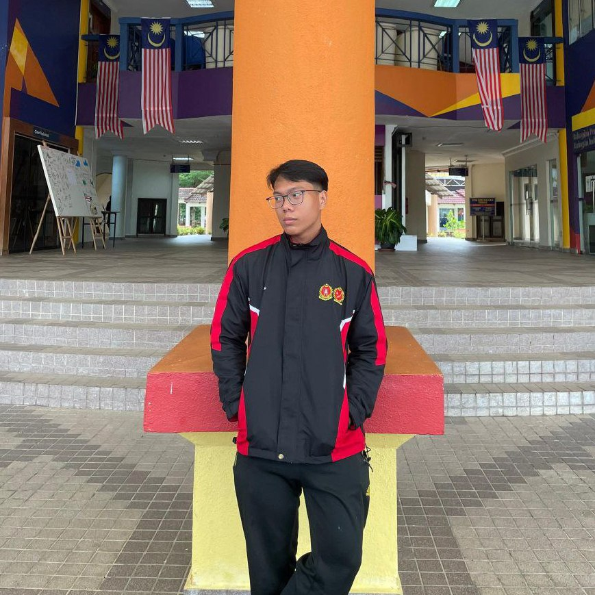

About me
I’m someone who loves to explore, learn and grow every day. Every experience shapes who I am, helping me discover my passions, face challenges with courage and embrace the journey of becoming the best version of myself. I believe in finding joy in little moments and always pushing myself to step out of my comfort zone to learn, connect and create meaningful experiences along the way.

Biodata
- Full Name: Mohammad Izwan Hakimi Bin Mohammad Faizol
- Age: 14 June 2005 (20)
- Gender: Male
- From: Selangor, Malaysia
- Education: Diploma in Information Management (UiTM)
- Hobbies: Video Game, Music and Web Design
- Skills: Communication, Programming and Design
My Skills
My Life Timeline
2005
Born in Hospital Selayang, Selangor
2012
Started primary school in SK Puncak Alam 2
2018
Started secondary school in SAM Paya Jaras
2023
Enrolled in UiTM Kelantan Branch (Diploma in Information Management)
Future
Build my own business & grow in digital website
Fun Facts About Me
- I also love playing badminton because my family is always active in the sport.
- I enjoy playing bowling with my family whenever we have free time.
- I developed an interest in coding starting from my third semester.
- Playing video games is my favourite way to relieve stress.
- I like going for evening jogs to enjoy the fresh air.
"More than anything, I aim to grow, explore and make a meaningful impact through who I am."